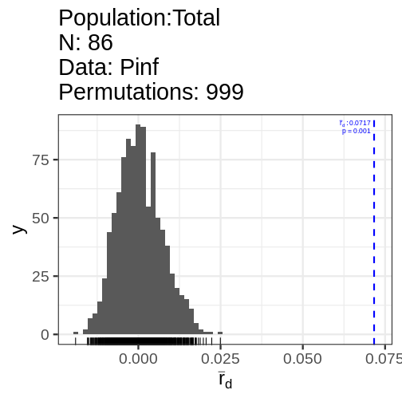
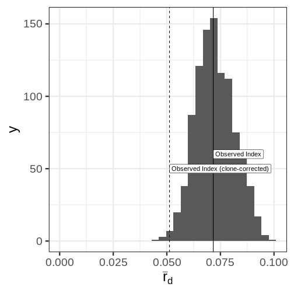

This lesson is still being designed and assembled (Pre-Alpha version)
Example with the {poppr} package
Overview
Teaching: 10
Exercises: 2
Questions
- Does this example work if you have never used the package before?
Objectives
- Introduce the {poppr} package
- Demonstrate resampling of \(\bar{r}_d\)
Introduction
The standardized index of association (\(\bar{r}_d\)) is a method to assess multilocus linkage disequilibrium in a random sample from a single population.
This can be calculated via the {poppr} package:
library("poppr")
library("ggplot2")
theme_set(theme_bw(base_size = 24))
data(Pinf)
print(Pinf)
This is a genclone object
-------------------------
Genotype information:
72 multilocus genotypes
86 tetraploid individuals
11 codominant loci
Population information:
2 strata - Continent, Country
2 populations defined - South America, North Americaset.seed(2021-09-21)
Pinf_ia <- ia(Pinf, sample = 999)
print(Pinf_ia) Ia p.Ia rbarD p.rD
0.65243253 0.00100000 0.07166177 0.00100000 We can also clone-correct the data to remove repeated genotypes, which may represent resamples of the same genet.
set.seed(2021-09-21)
Pinf_cc <- ia(clonecorrect(Pinf), sample = 999)
print(Pinf_cc) Ia p.Ia rbarD p.rD
0.47044566 0.00100000 0.05124452 0.00100000 This index has no known distribution, but we can get an idea of the spread by resampling it by the unique number of mulitlocus genotypes.
# Calculate the resampled index
set.seed(2021-09-21)
Pinf.resamp <- resample.ia(Pinf, reps = 999)
# Create the plot
library("ggplot2")
ggplot(Pinf.resamp[2], aes(x = rbarD)) +
geom_histogram(bins = 30) +
geom_vline(xintercept = Pinf_ia[3]) +
annotate("label", x = Pinf_ia[3], y = 60, label = "Observed Index", hjust = 0) +
geom_vline(xintercept = Pinf_cc[3], linetype = 2) +
annotate("label", x = Pinf_cc[3], y = 50, label = "Observed Index (clone-corrected)", hjust = 0) +
xlab(expression(bar(r)[d])) +
xlim(c(0, NA))Warning: Removed 1 rows containing missing values (geom_bar).

Distribution of the index of assocation for 999 samples of 72 genotypes
Keypoints
- This is a demo of the {poppr} package